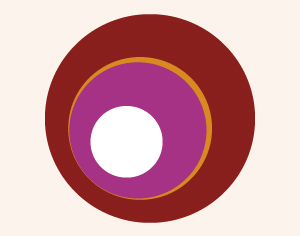

Leserom: «Over kvåsen» av Rune Belsvik m/Kristina Kjeldsberg
- Dato:
- 03.10.2013 til 03.10.2013
- Start kl :
- 10:00
- Slutt kl :
- 16:00
- Pris:
- 300,-
- Adresse:
- Norsk Skuespillersenter, Welhavensgate 1, Oslo
 Leserom er et konsept der 10 skuespillere og en regissør bruker en dag på å dykke ned i en ny, norsk scenetekst. Sammen leser de stykket og diskuterer teksten. En uformell og avslappet måte å utforske norsk dramatikk på. Deltakerne får et eksemplar av boken inkludert i kursavgiften.
{kind=link}
Om Over kvåsen
Bendik er forfattar. Han skulle så gjerne koma i gang med ei ny bok. Han får det ikkje til. Som om ikkje det var nok, kjem våren. Den forferdelege årstida, då ein skal vera lykkeleg og visa for naboar og alle kor glad ein er i livet og familien og hagen sin. Kona til Bendik heiter Agnete. Ho synest dei bør kjøpa seg ein fin båt, så dei blir like lykkelege som Mona og Lars. Men kva er det for noko å ha ein båt? Er det berre å starta motoren og leggja utpå? Er det ikkje noko som heiter bølgjer og skjær og uvêr? Er ikkje sjøen ganske djup? Og korleis legg ein til land? Oppsetninga av dette stykket var ein stor suksess for Agder Teater.
Om Rune Belsvik
Rune Belsvik er en norsk forfatter og dramatiker. Han har blant annet vært en fremtredende skikkelse i norsk barne- og ungdomslitteratur, og har utgitt en rekke bøker, både fortellinger, romaner, noveller og skuespill. Debutboken Ingen drittunge lenger (1979) utløste foreldreprotester da den gikk som opplesningsserie i NRK. For barnebøkene om Dustefjerten har Belsvik fått Kulturdepartementets litteraturpris. Han ble tildelt Brageprisen i 2000. Dramatiske verk inkluderer Hærverk, Gummelumm, Erling Andersen og halve kongeriket og Stryk meg, stryk meg.
Om Kristina Kjeldsberg:
Kristina er utdannet ved regi linjen på KHIO/Teaterhøgskolen i Oslo (2005-2010), og har siden regissert for blant annet Riksteatret, Det Norske Teatret og Hålogaland Teater. Hun har en cand.mag fra NTNU i teater og litteratur (1992-97). Hun arbeidet i flere år som frilance skuespiller, regissør og produsent ved bl.a. Det Åpne Teater, Haugesund Teater og Thesbie Teatret. Hun har vært daglig leder for Norsk Dramatikkfestival ved Det Norske Teatret og har hatt flere oppdrag for næringslivet bl.a. for Dinamo, Telenor, NHO og NORAD. Kristina innledet sin master i regi høsten 2008 i Helsinki på Teater Viirus med å sette opp "Undantaget" løst basert på B.Brechts "reglen og unntaket". Denne forestillingen ble invitert til Tammerförs internationale teaterfestival (09) og Theaterszene europa i Köln (10).
Hun har ved flere anledninger holdt populære kurs i Viewpoints for skuespillere i Göteborg, et kurs hun gjentar for Skuespillersenteret i dagene før Leserommet (se vår programoversikt).
Pris for medlemmer av NSF: 250,-